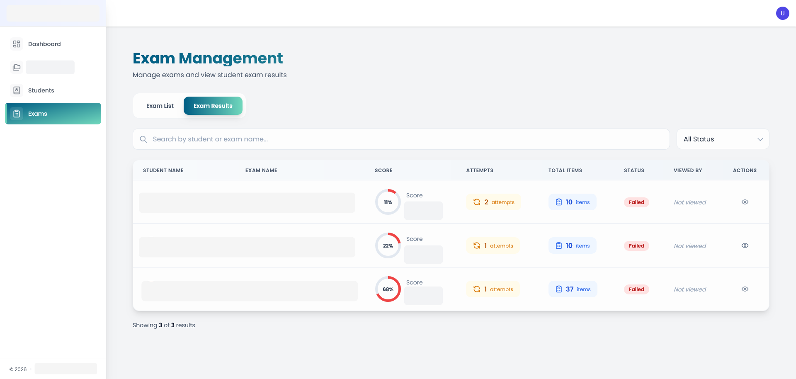
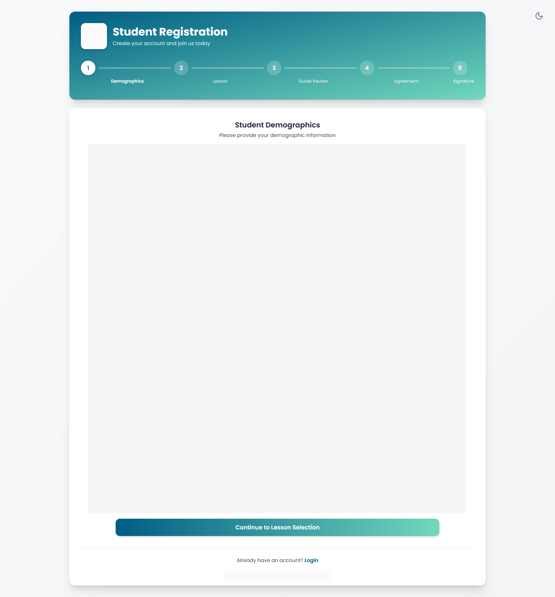
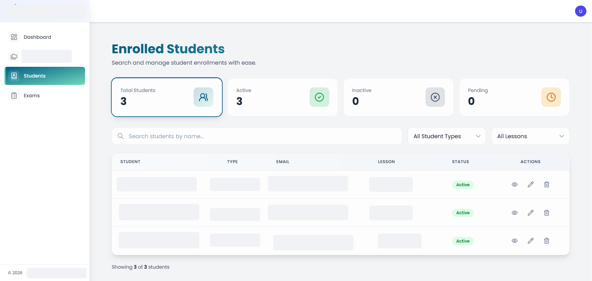

Education & Assessment Management System
GreenfieldWeb-based education platform built from scratch to support student learning, online exams, and student-side content display.
Laravel
Vue.js
MySQL
- Exam creation & exam management modules
- Student exam-taking flow (display + submission)
- Student-side topics & exams listing
- User management, registration, account verification
- Role-based access control (permissions by role)
Screenshots (anonymized and cropped for confidentiality)



Company project • Source code is private